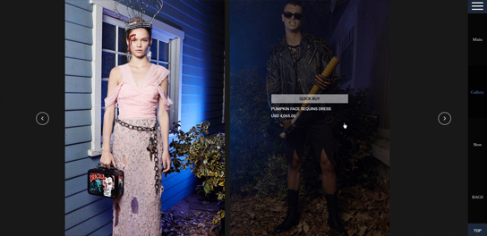
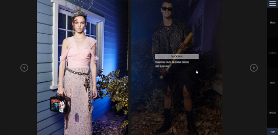

MOSCHINO
Design Point
 

info&buy
판매상품에 대한 정보와 구입버튼을 전면에 내세우진 않지만,
이용자가 상품에 대한 정보를 원할 때는 마우스오버를 하여 쉽게
정보를 얻을 수 있게 한다.
판매상품에 대한 정보를 조금 늦게 노출시킴으로써
이용자가 상품에 빠져들 시간을 늘리는 효과를 얻을 수 있다.
one page
원페이지 디자인을 하여 컨텐츠에 대한 집중도를 높이고,
오른쪽 메뉴바를 클릭하면 바로 원하는 페이지로 이동하게 하여
편리성을 높였다. 또한 머무르고 있는 페이지의 위치를 메뉴바에 표시하여
혼란을 최소화하는 디자인을 하였다.
slide gallery
슬라이드 갤러리를 통해 할로윈컬렉션의 착장 모습을 이용자가 감상하듯
볼 수 있게 하였다.
너무 많은 사진을 한꺼번에 노출 시키면 집중도가 떨어지므로
한슬라이드당 2컷의 사진만 노출 시켰다.
또한, 제품의 정보가 궁금하거나 제품을 구매하고 싶을때는
마우스오버하면 쉽게 접근할 수 있게 디자인 하였다.